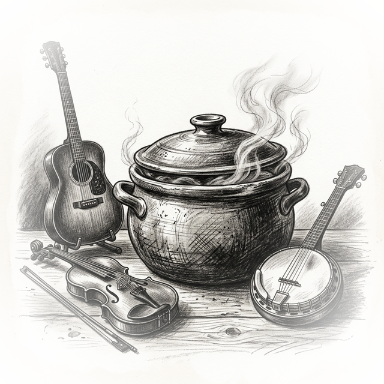
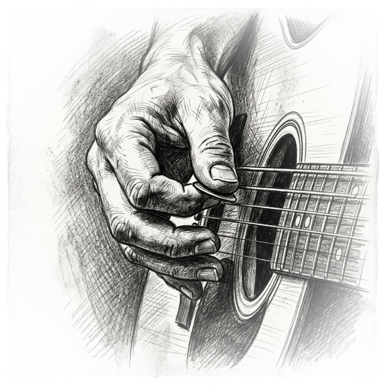
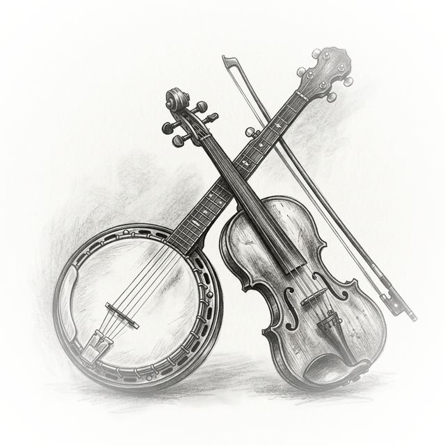

Deep research distilled into immersive, interactive explorations. YouTube videos analyzed by AI, synthesized into essays, quizzes, podcasts, and more.
Creating authentic acoustic folk, alt-country, and indie tunes entirely in Bitwig Studio using MIDI, presets, and plugins — from blank project to finished master.

Incremental skill building: chicken picking, chord embellishments, pentatonic licks, bass runs, and transitioning fluidly between chords and lead playing.

Using Claude Code CLI and Google Antigravity to write incredible fiction — multi-stage workflows for novels, chaos injection, human-AI collaboration, and meta-fiction publishing.
Deep reviews and interpretations of 20 essential works — Bolaño's 2666, Cormac McCarthy's Suttree, Knausgaard's The Third Realm, Anne Carson, Ted Chiang, Rachel Cusk, and more.